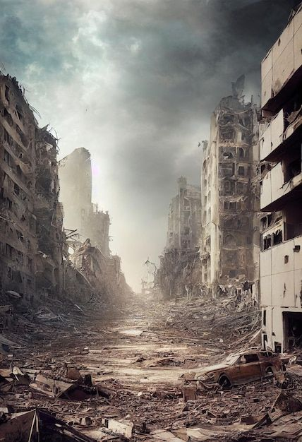
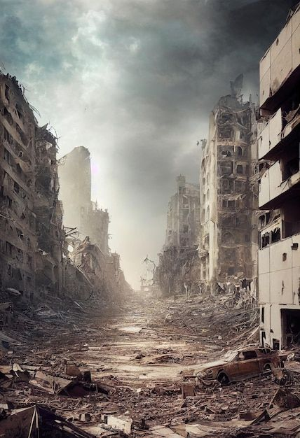
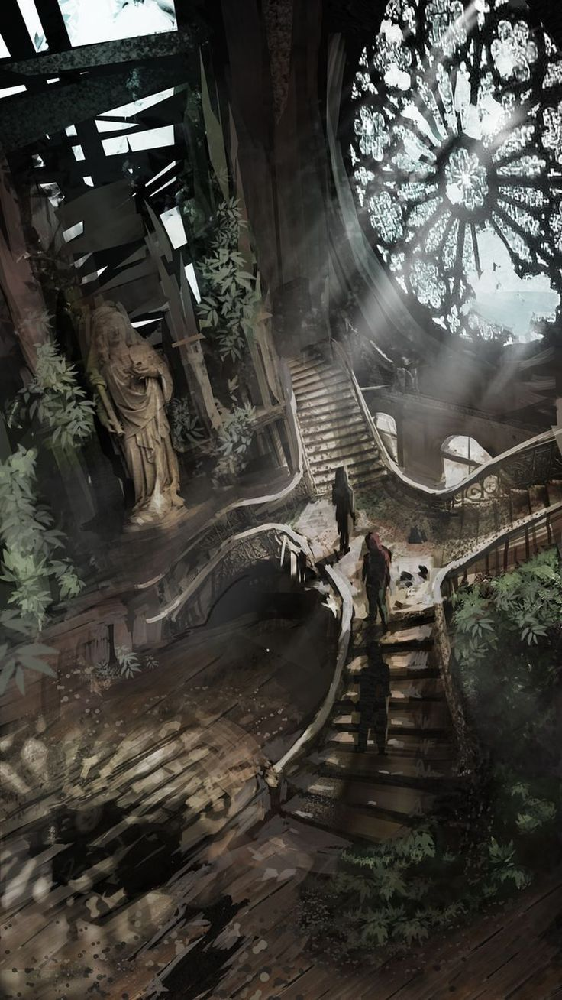
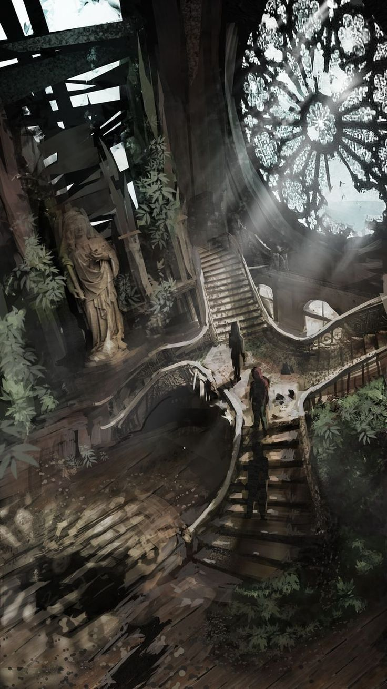
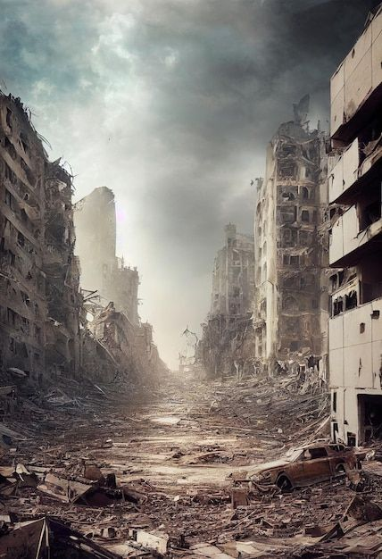
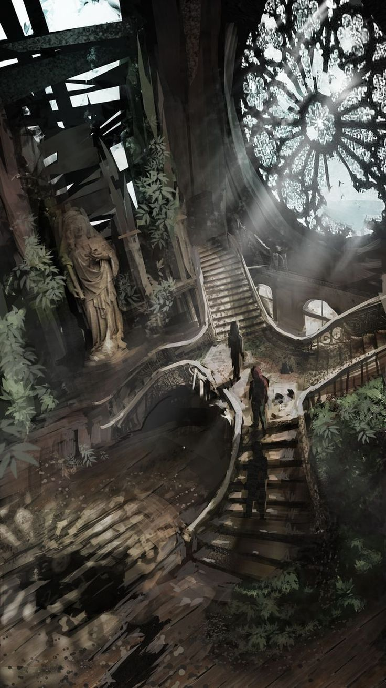

.jpg)
.jpg)
.jpg)
.jpg) 

.jpg)
.jpg)
.jpg)
.jpg) 

Desde tiempo atrás, desde la creación o evolución a existido la vida, desde nuestro primer respiro hemos vivido, pero para bien o para mal lo hemos hecho correctamente? o solo seguimos un parámetro ideado por la sociedad o familia?. Se a llegado a pensar que hay que alcanzar un propósito al que estamos destinados, podría ser mas simple que eso... Podríamos simplemente: Sentir, Amar, Compartir y hasta disfrutar, lo malo dejarlo pasar y volver a levantarte.
Tierra
Terra
La Tierra, todo un planeta que te da un lugar a cada ser vivo incluso al no pensante: los arboles, plantas y animales.
Los Animales:
Ellos son tan dependientes de la tierra como el humano, aunque no
todos creen que tengan tantos derechos como a la vida, los usan
como entretenimiento e inevitablemente como alimento, pero aun asi
no tienen porque sufrir. Aparte que estos seres sienten igual que
un niño en guerra con hambre, por eso son primitivos buscan
sobrevivir en un mundo donde los insensibles les roba lo que ellos
necesitan.
Las Plantas:
Mucho como algo insignificante, pero matamos mas a lo que nos da
vida, es tan lamentable como algo tan hermoso nos da medicina,
condimentos y el aire que respiramos, son purificadores del alma,
son la tierra misma, es la belleza de la vida.
Cielo
Deliciae
El cielo, un lugar para los humanos que puede ser tan importante como no, muchos han viajado por el, por migración pero solo las aves han explorado lo que es realmente vivir ese momento.
A pesar de que no es tan habitado como la tierra es un lugar donde cada ser vivo mira, y piensa en "Libertad". Es la parte de vivir en que uno puede suspirar y anhelar la paz, el cielo es tan tranquilo como arrebatador, pero no hay cadenas que contenga lo que hay sobre nosotros, ¿Por eso es tan admirable?, Vivir es querer la libertad de nuestra alma, en nuestro vivir, libre de expresar, libre de perseguir un sueño, libre y puro. El reflejo de la tierra, el reflejo del alma.
Agua
Aqua
Asi como en el océano, reflejamos nuestros sentimientos de lo mas profundo de la mente, es como: Un lugar oscuro, cálido y frio, entendible hasta cierto punto y misterioso aun hasta ahora para la humanidad.
El mar, océano o ríos lugares tan llenos de vida como en la tierra, da alegría y temores, da tanto como también puede quitar, es similar a la mente humana, puede dar frutos en sus buenos momentos pero también puede causar daño y herir al mas cercano. Se a podido saber lo que hemos podido investigar pero la profundidad de estas es tan densa que llegar... Nos podría veneficiar saber tanto?, la ignorancia nos da felicidad, que nos podría dar si nos profundizamos mas en lugares tan densos?.
Fuego
Ignis
EL fuego o mejor dicho, el caos. ¿Hay alguna forma de definir la destrucción?: Todo lo que nos puede causar daño, lo mas temible he incluso, lo mas dócil.
Todo caos, puede venir de cualquier lado, fuera y dentro de uno, en la vida de un ser vivo, nace por miedo y supervivencia o por heridas que generan rencor, nada puede superar el fuego que nos quema por dentro, es asfixiante y genera locura, sin poder ser comprendido ni por uno mismo nos herimos tanto como a los demás... La ayuda nos parece tan lejana que nos hundimos en tierra movediza y se nos hiere el corazón al no poder ver una mano de ayuda... Sigo pidiendo ayuda...

